Built as B, the form again (Will, 22 Nov 2026). Four details, numbered: 1 the heading, 2 the label, 3 the fields, 4 the ground. The first way of each is what is built now. Answer with four numbers, one per detail.
| 1 | AI Audit | Find the job eating your time and money. |
| 2 | What you get back | What your admin costs, written down. |
| 3 | The timeline | Your first AI employee in four steps. |
| 4 | What it fixes | The jobs everyone hates doing. |
| 5 | What comes next | One job first. Then the system. |
| 6 | Questions | Before you book. |
| 7 | Book the Audit | Ready? |
| home | Book the Audit | Got a job eating your time and money? |
Out of 5, a point each, half for partly: Picture, Prove, Only us, Device, Will's shape. Highlighted: the three drawn below.
| # | Heading | Pic | Prove | Only | Dev | Shape | /5 | Drawn | Note |
|---|---|---|---|---|---|---|---|---|---|
| 1 | Ready? | 0 | 0 | 0 | 0.5 | 0.5 | 1.0 | 1 (as built) | as built |
| 2 | Got a job eating your time and money? | 1 | 0 | 0.5 | 1 | 1 | 3.5 | 2 (recommended) | Will's own, the home page's close; on /pilot it answers the first section's line |
| 3 | Find the job eating your time and money. | 1 | 0 | 0.5 | 1 | 0.5 | 3.0 | the first section's heading word for word | |
| 4 | Ready when you are. | 0 | 0 | 0 | 1 | 0.5 | 1.5 | ||
| 5 | Got a job everyone hates doing? | 1 | 0 | 0 | 0.5 | 1 | 2.5 | section 4's heading is nearly the same | |
| 6 | Book the 45 minutes. | 0.5 | 0.5 | 0.5 | 0 | 0.5 | 2.0 | ||
| 7 | Which job goes first? | 0.5 | 0 | 0.5 | 0.5 | 1 | 2.5 | ||
| 8 | What would you hand over first? | 0.5 | 0 | 0 | 0.5 | 1 | 2.0 | ||
| 9 | Start with the job that costs you most. | 0.5 | 0 | 0 | 0 | 0.5 | 1.0 | the home page's How It Works heading | |
| 10 | Got a job you'd hand over tomorrow? | 1 | 0 | 0 | 0.5 | 1 | 2.5 | ||
| 11 | Your first AI employee starts here. | 0.5 | 0 | 0.5 | 0 | 0.5 | 1.5 | ||
| 12 | One call. One job. Fourteen days. | 0.5 | 0.5 | 0.5 | 1 | 0 | 2.5 | slogan three | |
| 13 | Still reading? Book it. | 0 | 0 | 0 | 1 | 0 | 1 | cheeky | |
| 14 | Seen enough? | 0 | 0 | 0 | 0.5 | 0.5 | 1.0 | ||
| 15 | Ready to find yours? | 0 | 0 | 0 | 0.5 | 0.5 | 1.0 | gate: yours what | |
| 16 | Ready to find the job? | 0.5 | 0 | 0 | 0 | 0.5 | 1.0 | ||
| 17 | Got one in mind? | 0 | 0 | 0 | 0.5 | 1 | 1.5 | gate: one what | |
| 18 | Which job eats your week? | 1 | 0 | 0.5 | 0.5 | 1 | 3.0 | ||
| 19 | 45 minutes on how your business runs. | 0.5 | 0.5 | 0.5 | 0 | 0.5 | 2.0 | ||
| 20 | Let's find the job. | 0.5 | 0 | 0 | 0 | 0.5 | 1.0 | ||
| 21 | Free, 45 minutes, yours to keep. | 0 | 0.5 | 0.5 | 1 | 0 | 2.0 | slogan three | |
| 22 | Got a job you'd happily hand over? | 1 | 0 | 0 | 0.5 | 1 | 2.5 | ||
| 23 | What's the job everyone hates? | 1 | 0 | 0 | 0.5 | 1 | 2.5 | the first form's own question | |
| 24 | Book your free AI audit. | 0 | 0 | 0 | 0 | 0.5 | 0.5 | repeats the button | |
| 25 | Find out what your admin costs. | 0.5 | 0.5 | 0.5 | 0 | 0.5 | 2.0 | near section 2's heading | |
| 26 | Ready to hand one over? | 0.5 | 0 | 0 | 0.5 | 0.5 | 1.5 | ||
| 27 | Got a Monday report? | 1 | 0 | 0 | 0.5 | 0.5 | 2.0 | gate: one office's job | |
| 28 | Your turn. | 0 | 0 | 0 | 0.5 | 0 | 0.5 | ||
| 29 | Start with one job. | 0.5 | 0 | 0 | 0 | 1 | 1.5 | ||
| 30 | Talk today. | 0.5 | 0.5 | 0 | 0 | 0.5 | 1.5 | the thanks page's heading | |
| 31 | What’s eating your week? | 1 | 0 | 0 | 1 | 1 | 3 | 3 | a familiar phrase, the owner's question |
| 32 | Done reading? | 0 | 0 | 0 | 0.5 | 0 | 0.5 | ||
| 33 | (no heading, the label alone) | 0 | 0 | 0 | 0 | 0.5 | 0.5 | judged on the page: a form under a bare label |
Recommended 2, Got a job eating your time and money?: your own line, the home page's close, the question the owner already asks themselves, and on /pilot it answers the first section's "Find the job eating your time and money." from the other end of the page. It scores 3.5, the top of the test. 1, Ready?, scores 1. 3 scores 3 and is new.
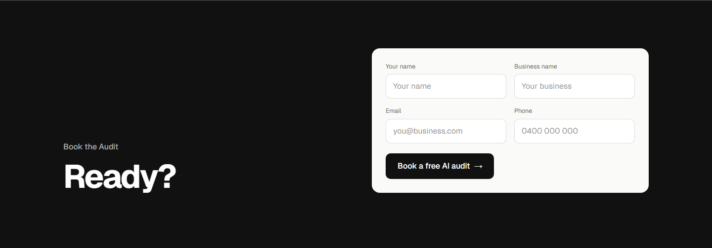
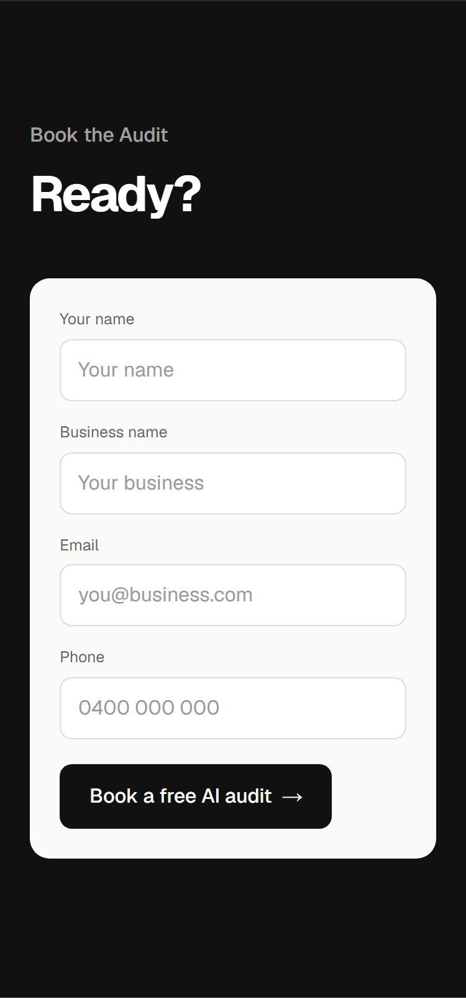
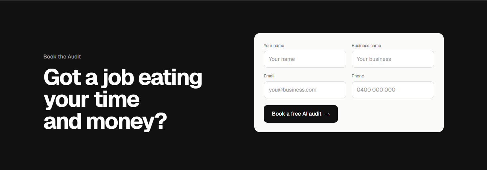
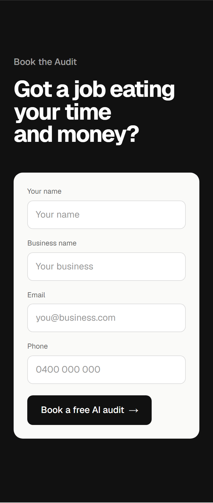
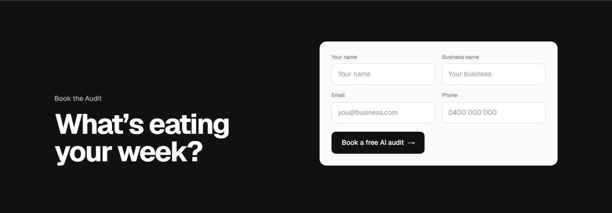
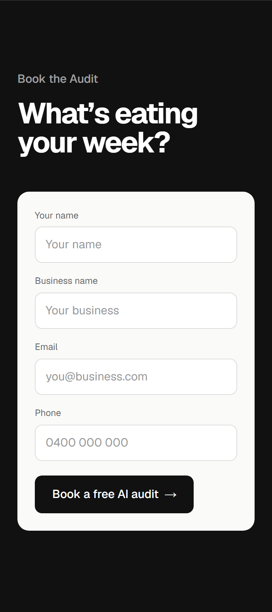
Recommended 1, Book the Audit, as built: the home page's label, in title case, which the charter sets for every label (your 13 Oct call). 2 drops it. 3 matches /pilot's other five labels, which are sentence case against the charter; that is for /pilot's words pass, not this section.
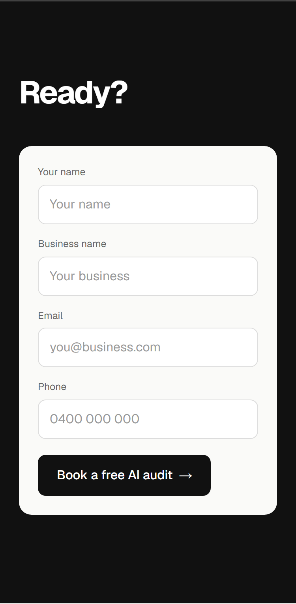
Recommended 1, four fields, as built: you said you call them and they tell you about the job, and someone who has read the whole page is near to booking, so the end form asks least. The first form keeps the job box. 2 asks it here too, so every /pilot lead arrives with the job named on the leads page. 3 shows the box without requiring it.
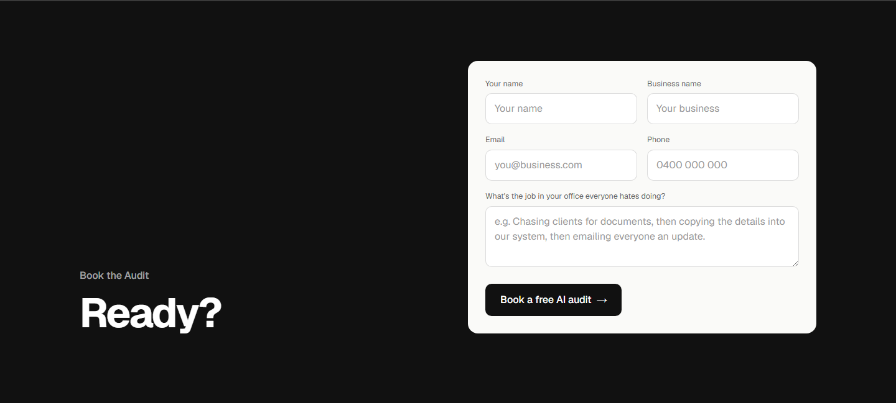
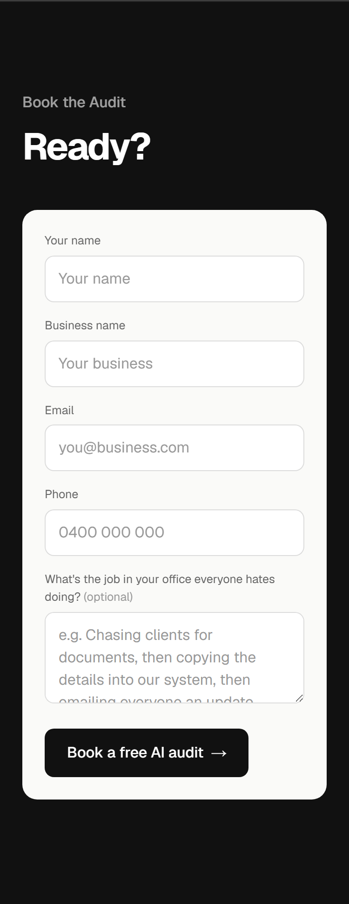
Recommended 1, the dark band, as built: it marks the end of the page and is the home page's own ending, so the two pages close the same way. 2 keeps the page's paper. 3 repeats the first section's layout with its three terms, a bookend, and is the tallest on a phone; its terms leave a word alone on a line at 375 and 320, as the first section's own terms do today (logged for /pilot's phone pass).
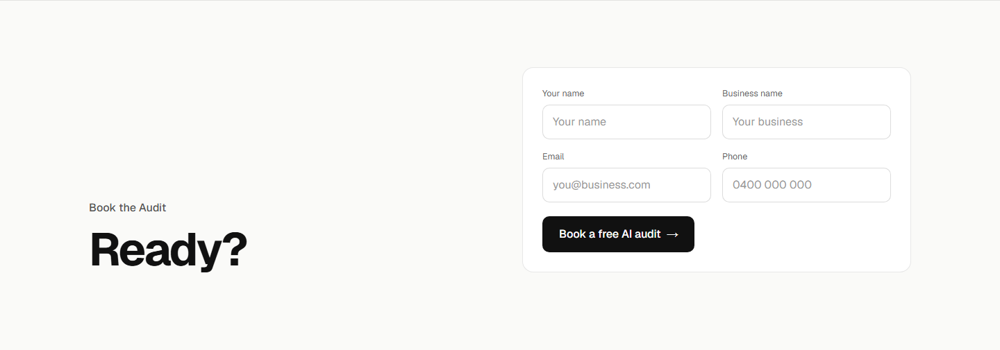
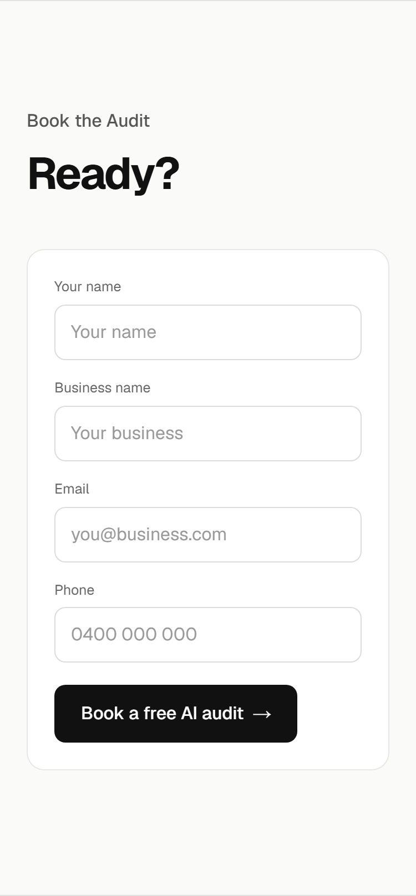
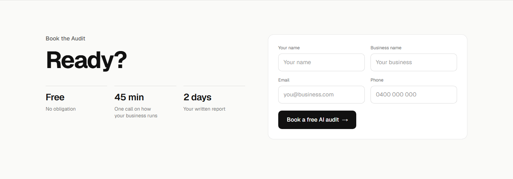
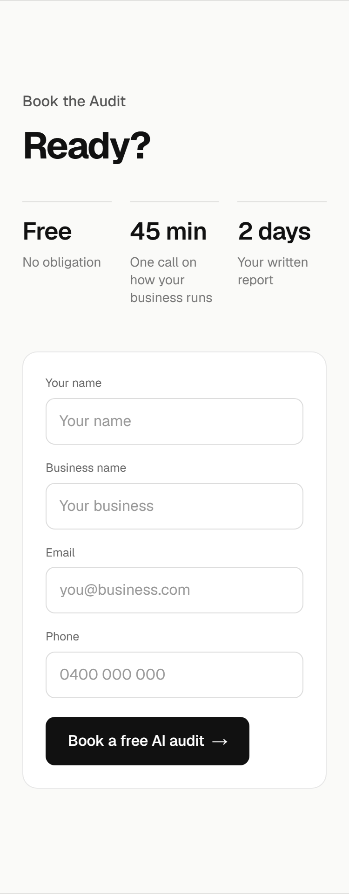